1
Откройте InShot и нажмите «Видео»
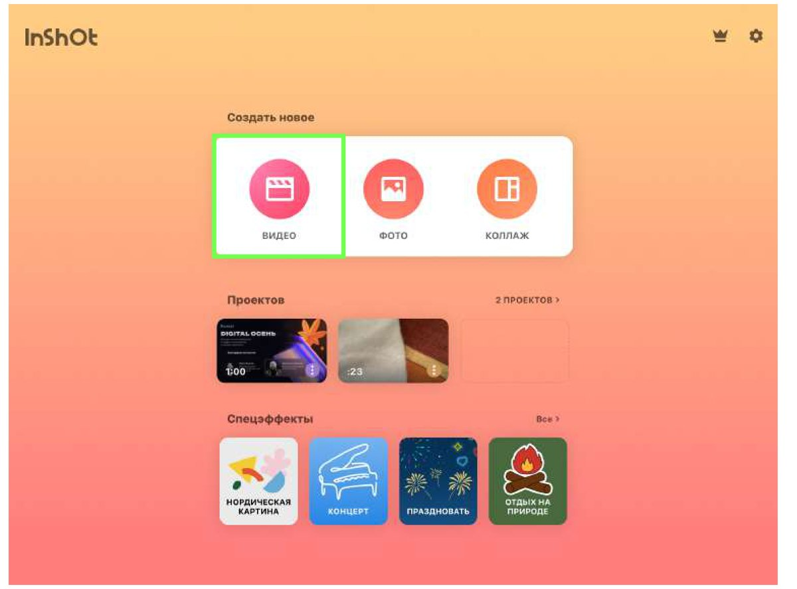
13 шагов на планшете. Делайте по порядку. Скачать PDF для печати

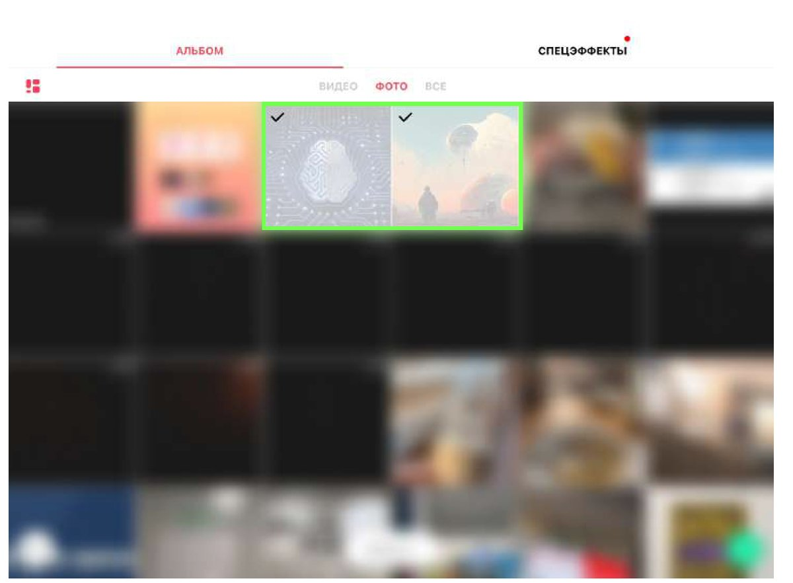
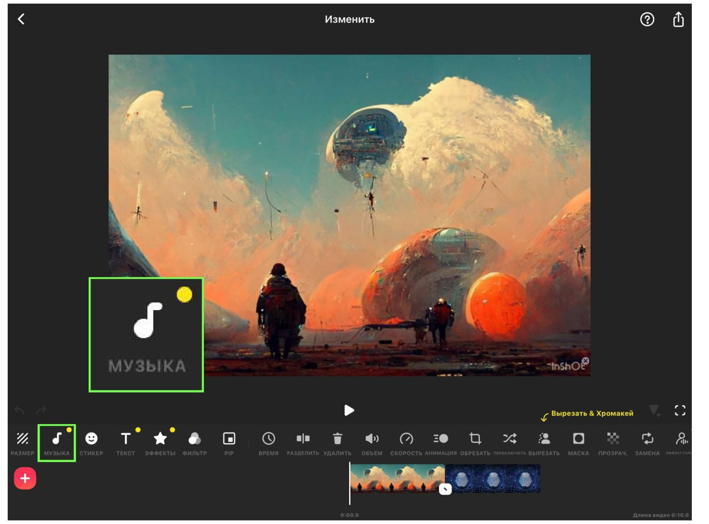
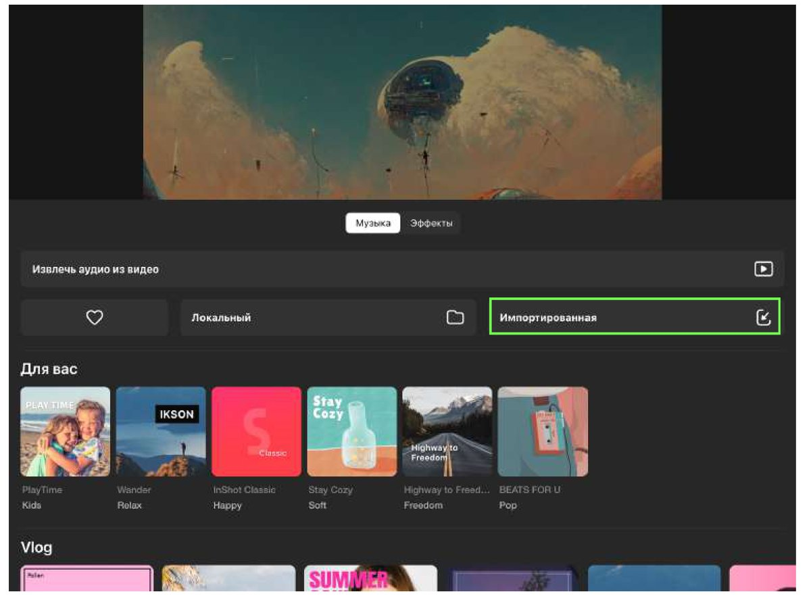
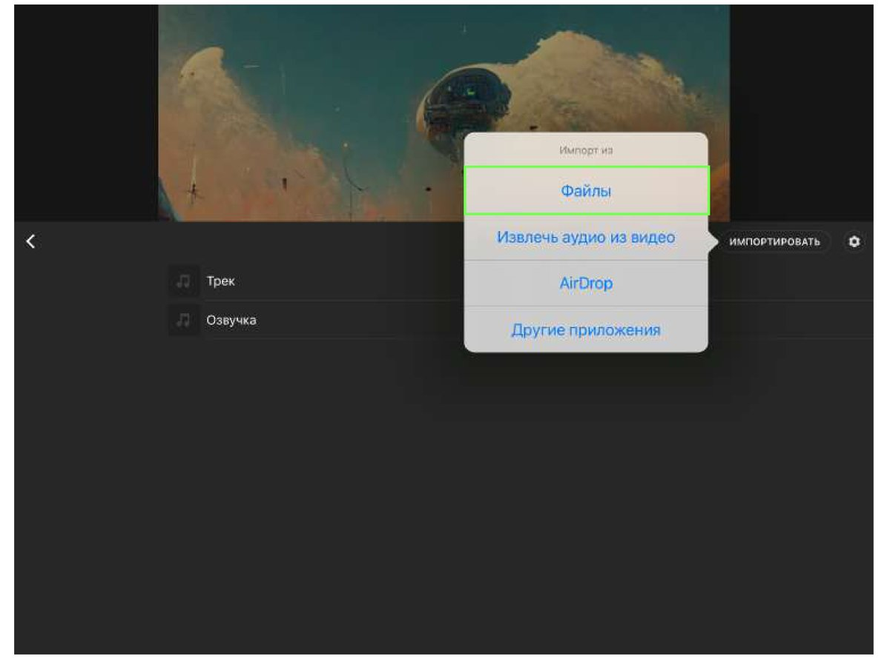
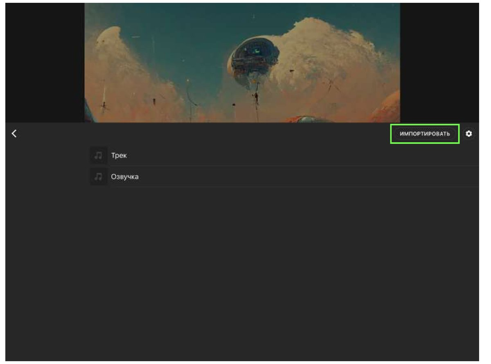
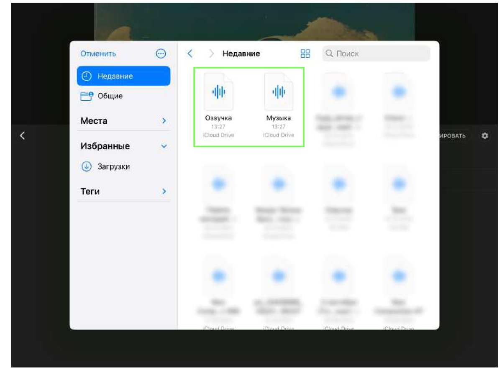
Напротив каждого файла нажмите «Использовать».
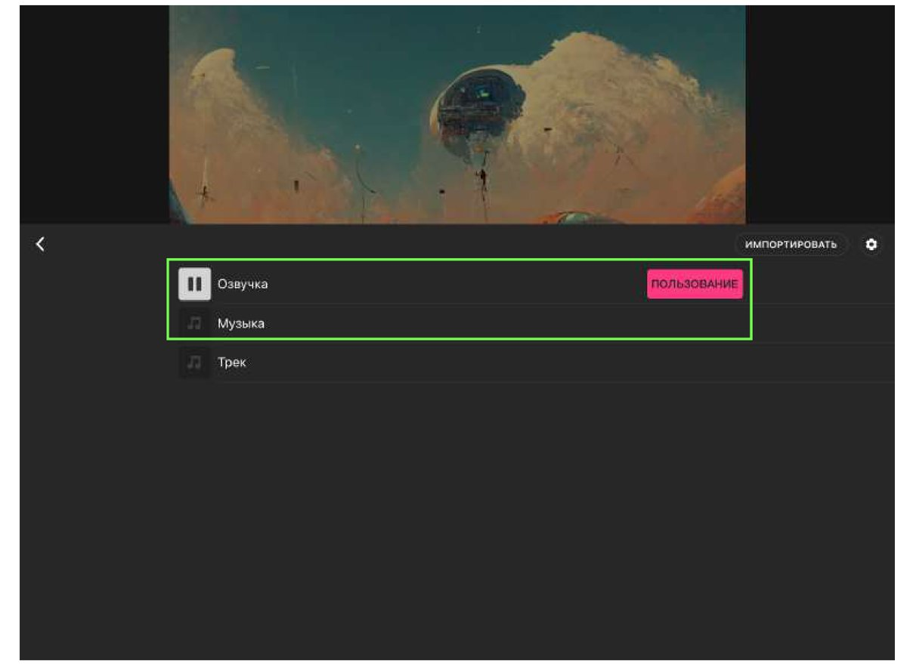
Лучше сделать музыку тише, примерно до 60%.
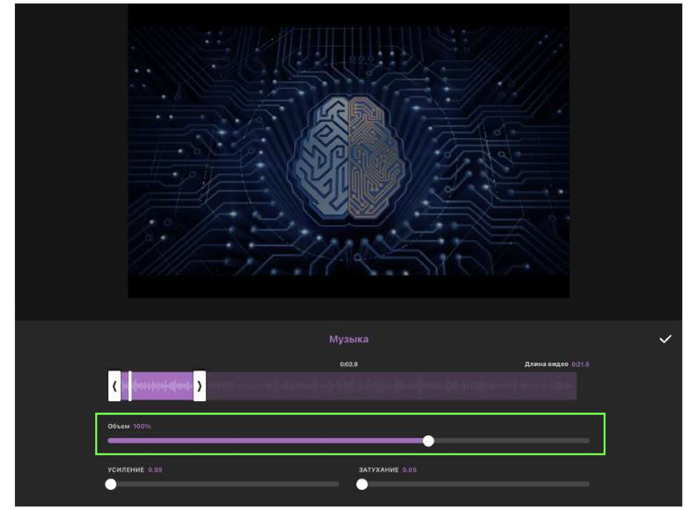
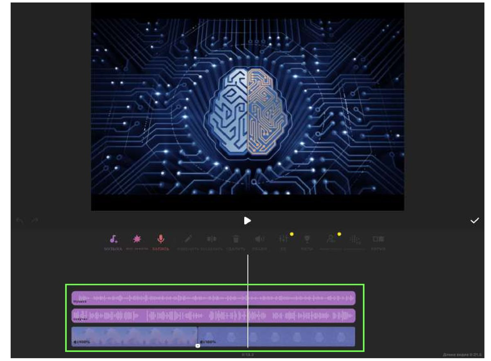
Они должны занимать всю длину звуковых дорожек.
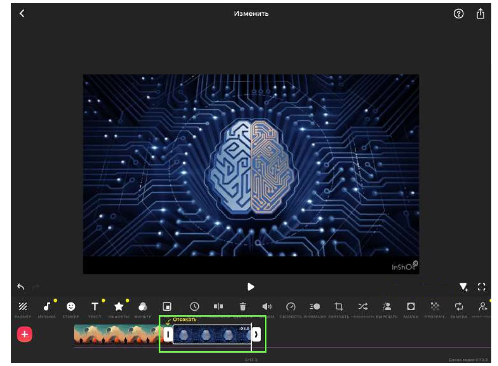
Сначала смонтируйте и проверьте, что всё хорошо.
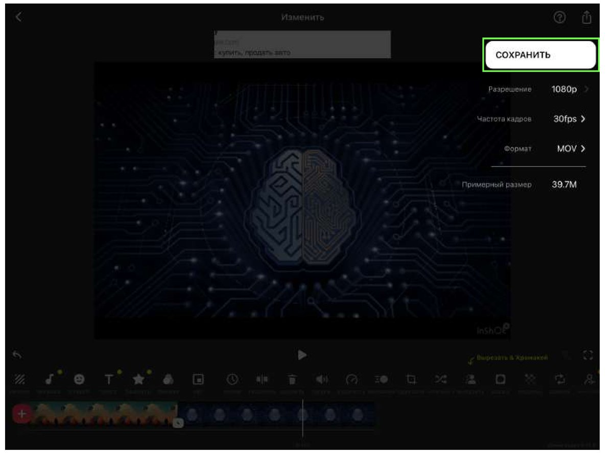
Видео появится в галерее планшета.
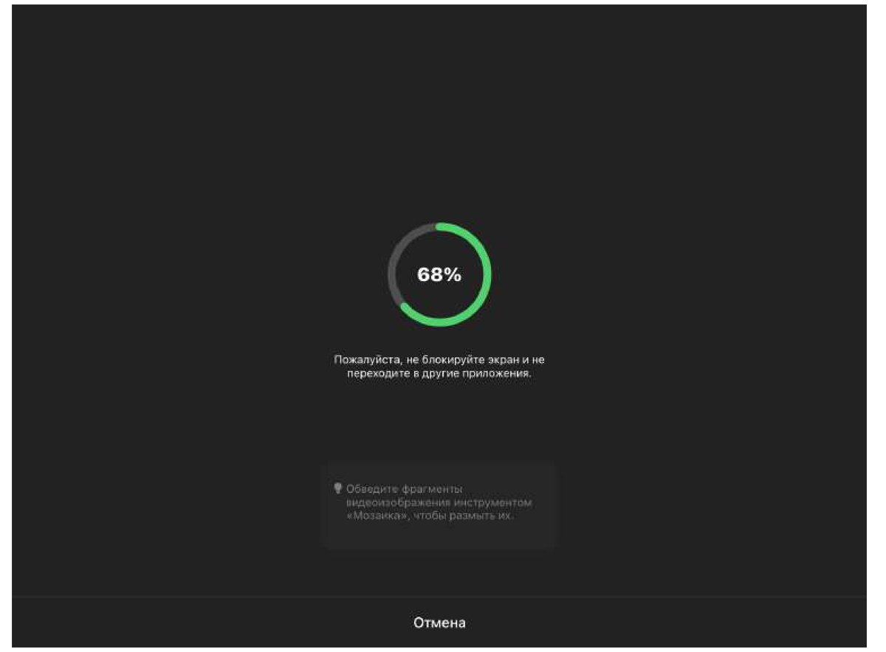